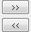

Um das Hilfsmittel Rserve-Konsole zu starten, wählen Sie im Origin-Menü Konnektivität: Rserve-Konsole.
Der Dialog dient zur Anmeldung in Rserve-Konsole. Lesen Sie weitere Informationen unter Rserve einrichten.
| Server |
Legen Sie die IP-Adresse des Servercomputers fest. |
|---|---|
| Port |
Legen Sie die Portnummer fest. |
| Login mit Benutzername und Passwort |
Aktivieren Sie dieses Kontrollkästchen, um Benutzername und Passwort einzugeben. |
| Benutzername |
Geben Sie in RserveAuth.txt enthaltenen Benutzernamen ein. |
| Passwort |
Geben Sie das in RserveAuth.txt enthaltene Passwort ein. |
Die Rserve-Konsole dient zum Ausführen von R-Skript und Austauschen von Daten zwischen Origin und R.
| Origin-Bereich |
Legen Sie den Datenbereich in Origin fest, der mit R ausgetauscht werden soll. |
|---|---|
| Daten als |
Legen Sie das R-Datenformat fest, wenn Sie die Origin-Bereichsvariablen an R weitergeben.
|
| Schaltfläche Daten senden |
 Das Senden der Daten von Origin an R bzw. von R an Origin wird gesteuert. |
| R-Objekt |
Legen Sie die R-Variable nach Namen fest, um Daten von Origin zu erhalten oder Daten an Origin zu senden. |
| Dialog Eingabe von R-Skript |
Über diese Konsole werden die R-Befehlszeilen eingegeben. |
Beispiele finden Sie auf dieser Seite.